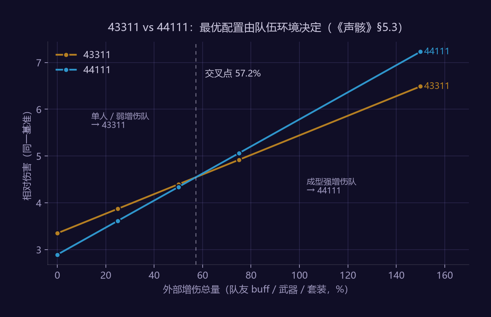

作者：赵鹏淦（Penggan Zhao）｜ Newcastle University · MSc Game Engineering 版本：v1.1（v1.0 经对照行业点评标准的评审修订，修订项见文内标注）｜ 拆解版本：2.x 拆解范围：声骸全链路（获取 → 筛选 → 养成 → 装备 → 循环），重点在装备端的构筑决策 定位：系统策划向；与《鸣潮战斗系统拆解案》（机制/数值向）构成姊妹篇
关于本拆解案的方法说明
与姊妹篇一致，本文把公开可查的规则当原材料，内容在其上的推导层：
| 公开原材料 | 本文的推导层 |
|---|---|
| COST 预算 12、5 槽位、COST ∈ {1,3,4} | 穷举可行域 + Pareto 支配剔除，得到三个前沿配置（社区只讨论两个） |
| 各 COST 层主词条池与数值 | 三种配置的乘区收益对比，及 44111 成立的交叉点求解（57.2%） |
| 首位声骸提供主动技 | 补进模型后求出 43311 反超的临界技能占比（4.55%~16.25%） |
| 声骸无体力、大世界掉落 | 时间成本模型，与树脂制换算到同一量纲比较 |
全部计算由 analysis/wuwa_echo_cost.py 生成，运行即可复现。姊妹篇的超几何结论（双爆同出 12.82%、毕业期望 36/256 件）在 §6 被直接引用。
本文保留了一次完整的模型翻车与修正过程（§5.2）：纯主词条模型给出的最优配置与社区实践相反，我没有直接采信任何一方，而是去找模型缺了什么变量——最后定位到首位声骸技能，并把它量化成一个可证伪的门槛。这一段是本文我自己最看重的部分。
主词条数值口径：§5 的全部计算依赖各 COST 层主词条的满级数值（4C 暴伤 44% / 暴击率 22%、3C 属伤 30% 等），已对照 Prydwen.gg 与 Game8 的公开数据库核对一致（v1.1 修订：v1.0 曾整体标注 [需核验]，评审指出这类查表即得的公开数值不应留作实验项）；游戏内逐件复核降级为版本变动时的抽查项（§10 实验 A）。§5.4 仍保留敏感度声明——结论形态不依赖具体取值，具体数字依赖。
1. 选题说明与拆解策略
装备词条类系统的拆解难度中等，常规写法上限有限——多数人只拆"装备界面那半个系统"。本案策略是把链路拆全：重点深拆常规写法忽略的获取端（§4）与决策密度最高的装备端（§5），筛选与养成端在 §4.4 给出结构分析，循环成本在 §6 定量。
声骸区别于原神圣遗物的核心不在词条（词条结构高度同构），而在获取端："击败敌人后在大世界实体化掉落、走近吸收"这一设计把刷词条从"副本抽奖"变成了开放世界玩法本身，并连带改写了体力经济。只拆装备界面，等于把这个系统最有设计含量的一半扔掉。
而在装备端，声骸有一个圣遗物完全没有的东西：COST 预算。它是这个系统里唯一的构筑决策点，也是本文计算量最大的一节。
2. 系统定位
- 养成终点：角色与武器养成有明确上限，声骸词条是唯一无上限的随机追求——版本长草期的核心留存工具
- 开放世界的奖励反馈器：大世界战斗的即时掉落物，让"探索—战斗"循环有持续产出
- 战斗扩展模块：首位声骸主动技能 + 合鸣套装效果参与配队构筑（这一条在 §5.2 被证明比看上去重要得多）
- 内容消耗调节阀：无体力门控的可重复刷取，用随机性而非次数限制控制毕业速度
3. 全链路总览
【获取端】击败敌人 → 声骸实体在场景生成 → 玩家靠近吸收
└ 数据坞等级门控掉落星级与概率
【筛选端】背包管理（锁定 / 弃置 / 批量回收）
【养成端】强化（+5/+10/…/+25，每 +5 解锁一次调谐）→ 调谐（随机副词条，最多 5 条）
【装备端】5 槽位 × COST ≤ 12 预算 → 主词条按 COST 分层 → 合鸣套装（2 件 / 5 件）
【循环】 词条不理想 → 回到获取端（无体力成本，成本 = 时间）
4. 获取端拆解
4.1 掉落与吸收规则
| 规则项 | 观察 / 推断 | 状态 |
|---|---|---|
| 掉落触发 | 击杀敌人后声骸以可交互实体生成于尸体位置 | 掉落率基数 [实测校验项] |
| 掉落率修正 | 数据坞等级提升掉落概率与星级上限 | 具体加成 [实测校验项] |
| 吸收方式 | 靠近后吸收，有动画与音效反馈 | 判定半径 [实测校验项] |
| 实体存续 | 不吸收时保留时长有限；推断切图 / 下线不持久化（服务端不会为掉落实体长期存储） | [实测校验项] |
| 定向刷取 | 特定敌人掉落特定声骸——怪物图鉴即掉落表 | 已确认 |
设计目的推断：掉落做成大世界实体而非结算面板发放，是花开发成本买"拾取爽感"，把数值产出包装成动作游戏的战利品体验（与魂系灵魂掉落、暗黑地面装备同源）。
更值钱的一层是「怪物 = 声骸」的一体两面：一份怪物美术资产同时是敌人、掉落物、图鉴收集项和技能来源，吃四份内容价值。对独立/中小团队而言这是可直接借鉴的资产复用思路。
4.2 数据坞：把限制包装成进度
数据坞等级由声骸收集度驱动，等级解锁更高星级掉落。本质是前期防挖矿、后期保底的双向阀门：新玩家刷不出毕业级声骸（保护养成节奏），老玩家在高等级下有稳定的 5 星产出预期。
对比原神：圣遗物品质由世界等级门控，鸣潮把门控做成了可见可养成的独立系统。同样是限制，包装成进度条之后玩家情绪完全不同——这是一个几乎零成本的体验改造，值得记下来。
4.3 体力经济的根本差异
| 维度 | 鸣潮声骸 | 原神圣遗物 |
|---|---|---|
| 获取成本 | 时间（无体力，大世界无限刷） | 树脂（可付费回复 → 直接商业化） |
| 获取场景 | 开放世界战斗 | 固定副本 |
| 商业化路径 | 不卖获取次数，付费集中在角色 / 武器池 | 树脂回复构成小额付费点 |
| 设计代价 | 肝度上限极高，需要后端随机性刹车 | 每日产出封顶，长草感更强 |
这一栏的定量分析见 §6——"免费"不等于"无成本"，把时间折算成可比的量之后，结论会更清楚。
4.4 筛选与养成端：渐进披露与零沉没成本（v1.1 补节）
§3 总览里的筛选端与养成端在 v1.0 只有一行，评审指出这与"把链路拆全"的承诺不符，本节补上结构分析：
- 养成端的核心设计是"渐进披露"：强化每 +5 解锁一次调谐（随机副词条，最多 5 条）。一件声骸的词条信息不是一次性揭示，而是被拆成五次小额披露——每一档都是一个止损决策点：第 2 条歪了就停手，只损失两档强化材料。对比圣遗物"强化 20 级才知道全部落点"，声骸把同样的随机性切成了五次可退出的小赌。
- 筛选端是一个显式漏斗：锁定（防误操作）→ 弃置标记 → 批量回收（返还部分材料）。它存在的前提正是 §4.6（姊妹篇）的结论——随机性 100% 在掉落与调谐瞬间结算，没有"再投一点也许翻盘"的空间，所以判弃可以果断，批量回收才有使用场景。
- 两者合起来与获取端构成闭环：高频掉落（§4.1）→ 快速判定（词条即所见）→ 低损耗退出（分档止损 + 批量回收）→ 回到刷取。这个循环的每一环都在压低单次尝试的心理成本——它是"无体力大量刷取"模式成立的体验前提，与 §6 的时间成本模型互为表里。
（本节为结构分析，不新增定量结论；强化材料返还比例等数值见 §7 问题 2 的讨论，标注 [实测校验项]。）
5. 装备端深拆：COST 预算的组合最优化
本文的核心章节。 社区把 COST 分配简化成"43311 还是 44111"两句口诀，本节把它当成一个带约束的整数组合问题穷举求解。
5.1 可行域穷举：不被支配的配置有三个
约束：恰好装满 5 槽位，Σ COST ≤ 12，单件 COST ∈ {1,3,4}。
穷举全部组合得 8 种可行、13 种超预算。用 Pareto 支配剔除（若配置 A 在 4C 与 3C 数量上都不少于 B 且至少一项更多，则 B 无条件劣；1C 是保底层，永远填得满，不参与判定）：
| 配置 | ΣCOST | 余量 | 4C | 3C | 1C | 状态 |
|---|---|---|---|---|---|---|
| 43311 | 12 | 0 | 1 | 2 | 2 | ★ Pareto 前沿 |
| 44111 | 11 | 1 | 2 | 0 | 3 | ★ Pareto 前沿 |
| 33311 | 11 | 1 | 0 | 3 | 2 | ★ Pareto 前沿 |
| 43111 | 10 | 2 | 1 | 1 | 3 | 被支配 |
| 33111 | 9 | 3 | 0 | 2 | 3 | 被支配 |
| 41111 / 31111 / 11111 | ≤8 | ≥4 | — | — | — | 被支配 |
结论一：Pareto 前沿有三个点，不是社区常说的两个。
33311 不被 43311 支配（3C 数量更多），却在攻略里长期缺席。一个配置"没人用"与"不该用"是两件事——先穷举可行域再谈优劣，可以避免把社区习惯误当成设计约束。
另外，预算 12 恰好卡在 43311(=12) 可行、44311(=13) 不可行之间。若预算放宽到 13，双 4C 将不再有机会成本，构筑决策会立刻塌缩成"能上双 4C 就上"。12 这个数字是为了保住取舍而挑的。
5.2 一次模型翻车，与它的修正
第一轮计算（只算主词条进乘区，其余作为公共项约去）：
| 外部双爆 | 43311 | 44111 | 33311 | 最优 |
|---|---|---|---|---|
| 无 | 2.2783 | 1.9309 | 2.6486 | 33311 |
| +30% CR / +60% CD | 3.3489 | 2.8918 | 3.5788 | 33311 |
| +60% CR / +120% CD | 5.2028 | 4.4072 | 5.4393 | 33311 |
33311 在全部五个场景夺冠，43311 一次也没赢（表格节选 3 档，完整 5 档扫描见 analysis/output_echo.txt §2，夺冠计数 33311：5/5）。这与社区共识直接冲突。
当模型与大规模玩家实践长期冲突时，先假设模型缺了变量，而不是假设几百万玩家一起搞错了。逐一检查省略项：
- 5 件套合鸣效果 —— 三种配置都能满足，不构成差异
- 副词条 —— 与 COST 层无关，已作公共项处理
- 属伤只对本属性生效 —— 主流角色伤害为单一属性，影响有限
- 首位声骸技能 —— 模型完全没有计入
找到了。1 号位声骸提供主动技，而强力技能几乎全挂在 BOSS 级（COST 4）声骸上。33311 的首位只能放 COST 3，等于主动放弃了一整块输出，而这块输出根本没进乘区计算。
第二轮：把它补进模型。 设常规伤害为 D、首位技能伤害为 K，则 43311 反超条件为 K₄ - K₃ > D₃₃ - D₄₃。换算成占常规伤害的百分比：
| 场景 | D(43311) | D(33311) | 技能需补足 |
|---|---|---|---|
| 无额外双爆 | 2.2783 | 2.6486 | 16.25% |
| +30% CR / +60% CD | 3.3489 | 3.5788 | 6.87% |
| +60% CR / +120% CD | 5.2028 | 5.4393 | 4.55% |
结论二：43311 的正确性来自声骸技能，而不是主词条。
门槛为 4.55%~16.25%（表格节选 3 档，完整区间见 analysis/output_echo.txt），且随双爆副词条增多而下降。BOSS 级声骸技能（变身类、召唤类）的伤害占比社区实测普遍报在 5%~15% 区间 [实测校验项，§10 实验 B]——注意门槛针对的是差额 K₄ − K₃，COST 3 技能多为小型体术、占比可近似忽略，故差额与 K₄ 占比同量级。两个区间大幅重叠，结论必须分面板声明（v1.1 修订：v1.0 曾写"远高于门槛"，评审指出两区间重叠、该断言不成立）：
- 成型面板下（门槛 4.55%~6.87%）：技能占比明显越过门槛，
43311反超成立——社区共识在此区间是对的 - 低练度面板下（门槛高至 16.25%）：技能占比未必够，
33311可能真的更优——社区共识在此区间未经检验 - 但流传的理由（"4C 主词条最强"）在任何面板下都是错的——主词条层面
33311反而更优 43311的真实理由是首位声骸技能，一个不在词条系统里的因素；且"共识只在成型面板下成立"本身是个新结论——低练度期抄成型配装表，抄到的可能是错的答案
这次翻车暴露的陷阱值得单独写下来：把系统边界画在词条上。 声骸的价值由「主词条 + 副词条 + 套装 + 技能」四部分构成，只算前两项会得到一个内部逻辑完全正确、数字也算对了、但边界画错的结论。错得很隐蔽——因为模型自洽，不会自己报错。
我保留完整的翻车过程，是因为它比一个正确结论更有价值：它演示了数值模型如何在自洽的情况下给出错误答案，以及怎样用"与实践冲突"这个信号把缺失变量找出来。
5.3 44111 的成立区间：交叉点在 57.2%
44111 与 43311 都能在首位放 COST 4，技能收益相同，所以两者的差距完全由主词条决定。扫描外部增伤（队友 buff / 武器 / 套装提供；扫描固定副词条 + 武器双爆为 +30% CR / +60% CD，即 §5.2 的中档成型面板——交叉点数值随双爆基线移动，换档需重算，脚本 §3 改两个参数即可）：
| 队友提供增伤 | 43311 | 44111 | 胜者 |
|---|---|---|---|
| 0% | 3.3489 | 2.8918 | 43311 |
| 25% | 3.8721 | 3.6148 | 43311 |
| 50% | 4.3954 | 4.3377 | 43311 |
| 75% | 4.9186 | 5.0607 | 44111 |
| 150% | 6.4884 | 7.2295 | 44111 |
二分求得交叉点：外部增伤 = 57.2%。

图：两配置的相对伤害均随外部增伤线性增长，但斜率不同——57.2% 处易主。由 analysis/make_charts.py 生成，五个数据点与上表同源、可复现。
结论三：44111 确实有成立区间，但它由「队伍环境」决定，不是个人偏好。
原因仍是乘区结构：43311 的两个 3C 属伤加算进增伤区，当队友已把增伤堆到 57% 以上，再往这个区加 60% 的边际收益已经很薄；而 44111 的暴击率进入相对空的暴击区，仍在线性生效。
于是配装的正确答案取决于队友是谁：
- 单人 / 弱增伤队 → 增伤区空 →
43311 - 带强增伤辅助的成型队 → 增伤区饱和 →
44111反超
这解释了社区两种配置长期并存却谁也说服不了谁：双方讨论的其实是不同的队伍环境，而攻略往往只给结论不给前提。一个负责任的攻略应该写成「当队伍增伤总量低于约 57% 时用 43311」。
策划视角：当一个构筑决策的最优解依赖于队伍中其他成员的配置时，这个系统就具备了配队深度——但前提是玩家能感知到这层依赖。鸣潮在 UI 上完全没有暴露"当前增伤区总量"，玩家无从判断自己在交叉点的哪一侧，这层深度因此大部分被浪费掉了。改进方案见 §7 问题 4。
第二个成立条件是资产约束：3C 属伤主词条随机且必须匹配角色属性。玩家手上没有对味 3C 时，真实选择不是"43311 vs 44111"，而是"44111 vs 43311 但两个 3C 是废主词条"。验证计算显示，一旦 3C 对不上属性，44111 立刻反超。
5.4 敏感度声明
上述排序依赖主词条数值假设 [需核验]。关键比值是4C 暴伤（44%）与 3C 属伤（30%）之比：
- 若实测 4C 暴伤显著高于 44%，或 3C 属伤显著低于 30%，
43311可能在主词条层面就胜过33311，§5.2 的翻车叙事随之失效（但结论仍成立，只是理由变简单） - 交叉点 57.2% 对这两个数值同样敏感，实测后需重算
结论的形态（存在 Pareto 前沿三点、存在交叉点、最优解依赖队伍环境）不依赖具体取值，具体数字依赖。这个区分在汇报时必须讲清楚。
6. 无体力刷取的真实成本
沿用姊妹篇 §4.6 的超几何结论：双爆副词条同出 12.82%，4C 毕业件期望 36 件，加档位要求期望 256 件。单件耗时 T 为 [实测校验项]，做参数化扫描：
| 单件耗时 T | 刷满 36 件 | 刷满 256 件 | 按每天 2 小时 |
|---|---|---|---|
| 30s | 0.3h | 2.1h | 1.1 天 |
| 60s | 0.6h | 4.3h | 2.1 天 |
| 120s | 1.2h | 8.5h | 4.3 天 |
结论四：时间成本对"有闲玩家"友好，对"有钱玩家"无解。
以 T=60s 计，一件严格毕业的 4C 声骸期望 4.3 小时，五槽位全毕业在数十小时量级（方差极大）。这与树脂制的总时长并无优势，真正的差别在分布形态：
- 树脂制：产出被日历强制摊平，付费可以买回一部分
- 声骸制：产出可被时间无限压缩，但付费买不到
这是一个明确的用户结构选择。声骸制把养成速度的决定权从钱包交给了闲暇，对学生与高活跃玩家极度友好，对付费意愿高但时间少的玩家完全没有出口——而后者恰恰是二游 ARPU 的主力。
库洛用这个设计换到口碑与差异化宣传点，代价是主动放弃了一条成熟付费通路，把全部收入压力转移到角色与武器卡池。评价这个取舍不能只看玩家更喜欢哪个，要看它在整体收入结构里被什么补上了。
交叉验证产出速度：原神每日树脂约产出 9~18 件五星圣遗物，无压缩空间；鸣潮 T=60s 时约 60 件/小时。即鸣潮玩家投入 1 小时 ≈ 原神玩家 4 天的产出量。（口径注：原神侧只计五星件、鸣潮侧计全部掉落件，满级数据坞下非全五星，按五星件折算该倍数会收缩 [实测校验项：满数据坞五星掉率]——但"小时级 vs 天级"的量级差不受影响，本节的刹车片推论只依赖量级。）
由此可得一个重要推论：声骸的词条要求必须相应更苛刻，否则内容会被高活跃玩家瞬间消耗完。姊妹篇算出的"严格毕业 256 件"正是对应这个供给速度的刹车片。两者不是独立设计，是同一个方程的两端——供给端放开多少，需求端就得收紧多少。
7. 亮点与问题
亮点
- 获取端实体化掉落：数值产出被包装成动作游戏战利品，一份怪物资产吃四份内容价值（敌人 / 掉落物 / 图鉴 / 技能来源）
- 数据坞把限制包装成进度：同样的门控，情绪完全不同
- COST 预算把背包约束转化为构筑决策，且预算值 12 被精确卡在保住取舍的位置（§5.1）
- 首位声骸技能让装备系统反哺操作深度——这也是 §5.2 里那个被我漏掉、却决定了正确答案的变量
问题与改进
问题 1：后期刷取退化为清怪模拟器。 数据坞满级后，刷声骸的动作乐趣被重复磨损，体验趋近跑图打卡。 → 改进：引入"声骸潮汐"限时事件区（高掉率 + 特殊敌人组合），把刷取从匀速消耗改为节奏化窗口。 → 成本：复用现有怪物与区域机制，中低。
问题 2：调谐五连歪的挫败集中爆发。 +25 最后一条词条歪掉时，前四次调谐的沉没成本一次性作废，是弃坑情绪高点。 → 改进：满调谐声骸解锁"定向重调"（消耗大量材料重 roll 指定单条），保留随机性但给沉没成本一个出口。 → 成本：需重算毕业周期，中。 → 注意：这会削弱 §6 提到的"刹车片"作用，须同步收紧其他环节，否则内容消耗加速。
问题 3：套装 5 件占满槽位，构筑空间被绑死。 混搭收益几乎恒负，词条系统的理论深度未被释放。 → 改进：增加"2+2+散件"档位的弱化混搭收益。 → 成本：全局数值平衡，高。
问题 4（新增，来自 §5.3）：交叉点不可见，配队深度被浪费。
43311 与 44111 的最优解由队伍增伤总量决定（交叉点 57.2%），但游戏内不显示这个数字，玩家无从判断自己在哪一侧，只能照抄攻略。
→ 改进：角色面板增加"当前增伤区总量"显示（含队友 buff 的预估值），或直接在声骸推荐里给出条件式提示。
→ 成本：低——数据全在客户端，只是没有暴露。
→ 收益：把一层已经做好但玩家看不见的配队深度真正激活，几乎是白捡的设计价值。
8. 配置表设计
本章对应实际工作中"文档写给程序看"的交付标准。字段类型全部显式声明，资源用 int id 引用，浮点转万分比整型存储。
echo_table（声骸表）
| 字段 | 类型 | 说明 |
|---|---|---|
| echo_id | int | 主键 |
| monster_id | int | 对应怪物（图鉴 / 掉落反查） |
| cost | int | 1 / 3 / 4 |
| rarity_max | int | 最高可掉星级 |
| main_stat_pool_id | int | → main_stat_pool |
| skill_id | int | 首位声骸技能 → 技能表 |
| sonata_ids | int[] | 可属套装（一骸多套用数组） |
| icon_id / model_id | int | 资源引用，禁止直接写路径 |
substat_pool（词条随机库）
| 字段 | 类型 | 说明 |
|---|---|---|
| substat_id | int | 主键 |
| stat_type | int | 枚举：1=攻击固定值 2=攻击% … |
| value_tiers | int[] | 数值档位（万分比整型，如 630 = 6.3%） |
| tier_weights | int[] | 各档位权重（整型权重，不用浮点概率） |
| roll_weight | int | 该词条被抽中的权重 |
| exclusive_group | int | 互斥组（已有词条不重复 roll） |
sonata_table（套装表，独立于声骸表）
| 字段 | 类型 | 说明 |
|---|---|---|
| sonata_id | int | 主键 |
| effect_2pc_id / effect_5pc_id | int | buff 引用 |
| desc_key | int | 本地化文本 key（不硬编码中文） |
三处刻意的规范：资源用 id 不用路径（改目录不用动数据表）、权重用整型不用浮点（避免概率和不为 1 的浮点误差，且便于策划直接加减）、套装表独立于声骸表（一骸多套时避免冗余行）。
9. 技术实现推断
- 掉落实体生命周期：推断为客户端表现 + 服务端权威的临时 entity，带 TTL 超时回收，下线不持久化。验证：掉落后挂机计时 / 断线重连观察。
- 吸收判定：推断为球形触发器 + 交互优先级队列（多个声骸重叠时的拾取顺序）。
- 随机 roll 归属：主词条与副词条必然服务端 roll（防篡改），调谐结果在请求返回前不可预测。
- 数据坞进度：账号级持久化，掉落概率修正推断为服务端掉落表的行级权重覆盖。
- 主词条与乘区的耦合：§5 的计算要求每个主词条携带"所属乘区"标签（暴击区 / 增伤区 / 攻击区），否则无法正确结算。这与姊妹篇 §7 对 buff 系统的推断是同一套结构。
10. 实测校验计划
按优先级排列。
实验 A：主词条数值抽查（v1.1 起降级为版本变动抽查项）
- 说明：v1.0 曾列为最高优先级实验；评审指出主词条满级数值属公开可查信息，已对照 Prydwen.gg / Game8 核对一致（见方法说明）。保留为版本更新后游戏内抽查一件确认未变动即可
- 实测资源集中投向真正查不到的量：实验 B / C / D
实验 B：首位声骸技能伤害占比（★现最高优先级，验证 §5.2 的修正）
- 方法：固定配装，训练场录一轮 30s 完整输出循环，逐段统计声骸技能伤害 / 总伤害；n≥3 次取中位数，注明样本量
- 简化版（半小时内可完成）：单次循环 n=1 也先做——哪怕单点数据也能确认占比在门槛的哪一侧，比"支柱悬空"强一个量级
- 判据：占比与 §5.2 分面板门槛（4.55% / 6.87% / 16.25%）逐档对比
- 意义：这是
43311正确性的唯一支柱；§5.2 已按面板区间做了条件化声明，本实验决定每个区间内结论的最终形态
实验 C：副词条概率分布（校验姊妹篇 §4.6 的等概率假设）
- 方法：采集 200+ 件 4C 声骸副词条，统计频次，卡方检验
- 预期：等概率假设很可能被拒绝，届时毕业成本高于 36 / 256 件
实验 D：获取端参数
- 单件耗时 T（§6 的模型参数，录屏计时 20 次取中位数）
- 掉落率基数与数据坞各级修正（固定怪 ≥100 次击杀）
- 吸收判定半径、实体存续时长
产出物
Excel 验证表（理论值 / 实测值 / 绝对误差 / 相对误差）。完成后升版 v1.2，在对应结论标注「已实证」或「已修正」。
11. 参考与附录
附录：计算脚本
analysis/wuwa_echo_cost.py — 无第三方依赖，python wuwa_echo_cost.py 复现全部计算。输出存档 analysis/output_echo.txt。
| 脚本章节 | 对应正文 |
|---|---|
| §1 可行域穷举 | §5.1 |
| §2 三配置乘区对比 | §5.2 第一轮 |
| §2b 声骸技能临界占比 | §5.2 修正 |
| §3 交叉点求解 | §5.3 |
| §4 时间成本模型 | §6 |
公开原材料来源
COST 预算与槽位规则、各层主词条池、数据坞机制、掉落规则，取自公开社区整理与游戏内文本。主要参考：鸣潮 Wiki（Fandom）Echo 相关条目、Prydwen.gg 声骸词条整理、游民星空声骸系统讲解。姊妹篇《鸣潮战斗系统拆解案》提供乘区结构与超几何模型。
方法论参考
- 声骸系统策划案范例（B 站 V3 库洛洛点评 BV1GkdbBkEUR）：正向策划案结构（设计目的 / 功能说明 / 界面说明 / 美术需求 / 配置表）
- 该点评指出的通病——获取端链路缺失、配置表资源路径硬编码——本案 §4、§8 即针对性补强